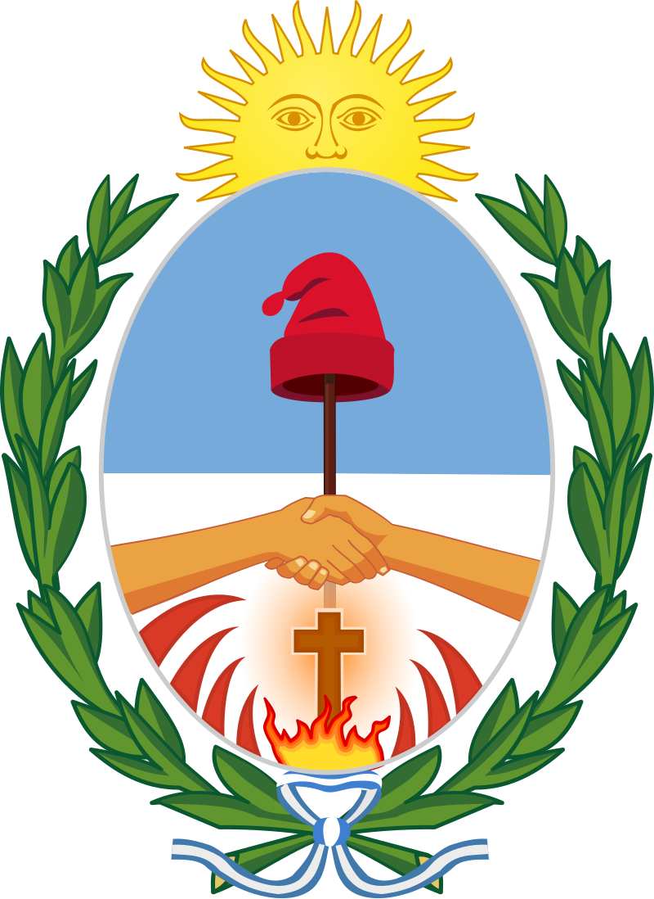

La Provincia de Corrientes es conocida por su rico patrimonio cultural y hermosos paisajes. Situada en el noreste de Argentina, está delimitada por los ríos Paraná y Uruguay. Los Esteros del Iberá, una vasta área de lagos y humedales, es un destino popular para el ecoturismo.
Provincia de Corrientes
Provincia Argentina

Historia
Corrientes fue fundada el 3 de abril de 1588 por Juan Torres de Vera y Aragón. A lo largo de los siglos, ha sido testigo de eventos significativos, desde la época colonial hasta la Guerra de Independencia Argentina.
La provincia es conocida por su mezcla única de culturas indígenas y españolas, que se refleja en su música, danza, gastronomía y festivales. El Chamamé, un género musical y danza tradicional, es un símbolo cultural de Corrientes.
Corrientes también es famosa por su belleza natural, incluyendo los Esteros del Iberá, uno de los mayores reservorios de agua dulce del mundo, hogar de una rica biodiversidad y un destino ecoturístico de renombre.
Fundación y época colonial
En 1516, Juan Díaz de Solís encabezó la primera expedición al área habitada por aborígenes guaraníes. Finalmente, la ciudad de Corrientes fue fundada el 3 de abril de 1588 por Juan Torres de Vera y Aragón. Fue fundada como estación de paso entre Asunción y Buenos Aires.
El nombre original de la ciudad fue "Ciudad de Vera de las Siete Corrientes", debido a las siete puntas de piedra que penetran en el río, provocando fuertes corrientes. Su ubicación privilegiada la convirtió en una plaza importante durante la época colonial.
La relación con los nativos guaraníes fue ambigua; los fundadores, en su mayoría mestizos criollos procedentes de Asunción, enfrentaron continuos ataques de las tribus locales. La principal edificación de la temprana ciudad fue el fortín de madera.
Aprende más sobre Corrientes“Corrientes es un lugar donde el pasado y el presente se entrelazan armoniosamente, creando una cultura vibrante y única que cautiva a todos sus visitantes.”
Galería
Atardecer Correntino
Corrientes, Capital
Palacio Municipal
Corrientes, Esquina
Carpincho/Capybara
Corrientes

Puente y Atardecer
Corrientes
Dogo Gaucho Argentino
Corrientes
Playa y Atardecer
Corrientes